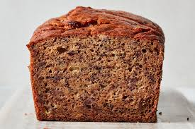

A delicious, healthy banana oat bread recipe perfect for getting toddlers to eat some fruit and oats without a fuss.
This recipe is also perfect for those who are gluten-free or gluten-intolerant and still want a baked good.
- 3 cups instant or quick-oats
- 2 eggs
- 4 large bananas
- 1 cup walnuts
- ½ cup chopped chocolate
- ¼th cup chia seeds (optional for more fiber)
- ¼th cup honey (optional for sweetness, I omit this)
- 1 tsp baking soda
- Preheat the oven to 350°F.
- Blend the oats, eggs, honey if using any, and bananas in a blender until smooth.
- Place the mixture in a mixing bowl, and mix in the chia seeds, baking soda, walnuts, and chocolate.
- Pour the batter into a greased baking dish.
- Bake for 30 minutes or until you can insert a toothpick and it comes out clean.
- Cool for 10-20 minutes and enjoy.